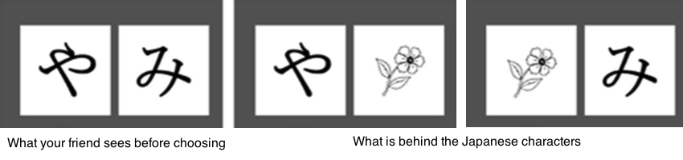

- Print out ten pictures of different objects of your choice, two copies for each
- Select twenty random Japanese characters from here and print them out
- On the two pictures of the same object, put two pictures of different Japanese characters on them
- Do this for the next nine objects
- Now get a friend to be experimented on!
- This is how the setup should look like:
- Ask your friend to choose a Japanese word, then lift up the picture and look at the object beneath it
- After this is done, show your friend a list of pictures which contain pictures s/he has seen and has not seen, and ask if s/he can recognize the picture
- Record how many pictures are remembered and how many forgotten
- This is the choice condition
- Repeat everything from the beginning with completely different objects, but this time YOU will be the one to choose which Japanese character to remove
- This is the fixed condition
- Compare the difference between the ratio of remembered/forgotten pictures between trial 1 and trial 2
- Let's look at the three phases: before encoding, during encoding, after encoding
| Before encoding | During encoding | After encoding |
| The anticipation of choice can make the brain exhibit differential activity during choice and fixed trials, in particular the left striatum | Brain regions critical in the encoding of information (eg. hippocampus, perirhinal cortex, etc.) might display differential activity during choice and fixed trials | During recognition task, the hippocampus, which plays a role in episodic memory, might show differential activity between choice and fixed trials |
=> We need to observe the differential activity that brain regions display between choice and fixed trials in each of the three phrases to understand the neural mechanism beneath enhanced memory